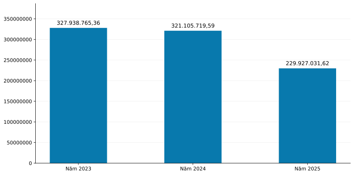
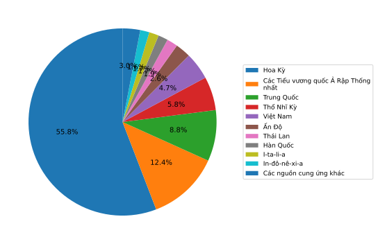
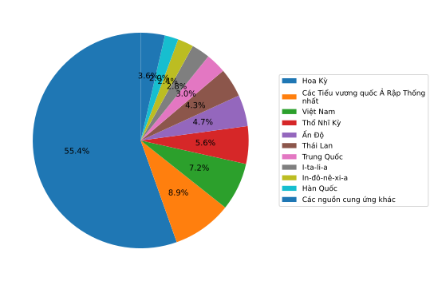
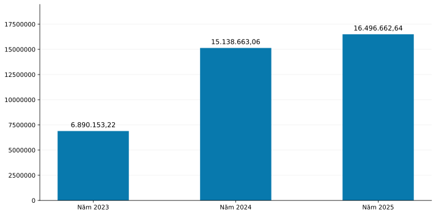
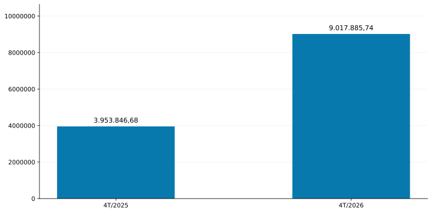

Bộ Công Thương rà soát cuối kỳ biện pháp chống bán phá giá đối với vật liệu hàn nhập khẩu từ Ma-lai-xi-a, Thái Lan và Trung Quốc
Ngày 19/6/2026, Bộ Công Thương ban hành Quyết định số 1453/QĐ-BCT về việc rà soát cuối kỳ áp dụng biện pháp chống bán phá giá đối với một số sản phẩm vật liệu hàn có xuất xứ từ Ma-lai-xi-a, Vương quốc Thái Lan và Cộng hòa Nhân dân Trung Hoa (mã vụ việc ER01.AD15).
Việc rà soát được thực hiện sau 4 năm áp dụng biện pháp chống bán phá giá theo quy định của Tổ chức Thương mại Thế giới (WTO) và pháp luật Việt Nam. Mục tiêu của đợt rà soát là đánh giá liệu việc chấm dứt biện pháp có dẫn đến nguy cơ tái diễn hành vi bán phá giá và gây thiệt hại cho ngành sản xuất vật liệu hàn trong nước hay không, đồng thời xem xét tác động kinh tế - xã hội của việc tiếp tục áp dụng biện pháp.
Trong thời gian tới, Cơ quan điều tra sẽ gửi bản câu hỏi tới các bên liên quan để thu thập thông tin, đánh giá khả năng tái diễn hành vi bán phá giá, mức độ thiệt hại đối với ngành sản xuất trong nước và tác động của việc tiếp tục áp dụng biện pháp. Trên cơ sở đó, Bộ Công Thương sẽ tiến hành thẩm tra, xác minh thông tin trước khi ban hành kết luận chính thức.
Bộ Công Thương đề nghị các doanh nghiệp, tổ chức và cá nhân có hoạt động xuất khẩu, nhập khẩu, sản xuất, phân phối, kinh doanh hoặc sử dụng sản phẩm thuộc đối tượng rà soát chủ động đăng ký tham gia vụ việc với tư cách bên liên quan và cung cấp đầy đủ thông tin theo yêu cầu của Cơ quan điều tra để bảo đảm quyền và lợi ích hợp pháp của mình.
Đơn đăng ký bên liên quan được thực hiện theo Thông tư số 26/2025/TT-BCT và gửi qua Hệ thống tiếp nhận hồ sơ phòng vệ thương mại trực tuyến (TRAV ONLINE) hoặc qua đường bưu điện, thư điện tử trong thời hạn 60 ngày làm việc kể từ ngày Quyết định tiến hành rà soát có hiệu lực.
TIN TRONG NƯỚC
Nam Phi kết luận điều tra tự vệ đối với thép cuộn chống ăn mòn, hàng xuất khẩu Việt Nam không bị áp thuế
Ủy ban Quản lý Thương mại quốc tế Nam Phi (ITAC) vừa ban hành kết luận cuối cùng trong vụ việc điều tra tự vệ đối với sản phẩm thép cuộn chống ăn mòn nhập khẩu.
Theo kết luận, ITAC xác định lượng thép nhập khẩu tăng mạnh đã gây thiệt hại nghiêm trọng cho ngành sản xuất trong nước và khuyến nghị Nam Phi áp dụng biện pháp tự vệ trong thời hạn 3 năm. Mức thuế được đề xuất giảm dần từ 52,34% trong năm đầu, xuống 37,34% trong năm thứ hai và 22,34% trong năm thứ ba.
Đáng chú ý, Việt Nam được loại trừ khỏi phạm vi áp dụng biện pháp tự vệ. Theo ITAC, lượng thép cuộn chống ăn mòn nhập khẩu từ Việt Nam không vượt ngưỡng quy định đối với các nước đang phát triển, vì vậy hàng hóa có xuất xứ Việt Nam không phải chịu mức thuế tự vệ theo kết luận hiện nay.
Đây là kết quả tích cực, góp phần duy trì khả năng tiếp cận thị trường Nam Phi cho các doanh nghiệp sản xuất và xuất khẩu thép của Việt Nam.
Tuy nhiên, Cục Phòng vệ thương mại lưu ý doanh nghiệp không nên chủ quan, quyết định cuối cùng của Chính phủ Nam Phi và các đợt rà soát trong thời gian tới có thể làm thay đổi phạm vi áp dụng biện pháp. Do đó, doanh nghiệp cần tiếp tục theo dõi các văn bản chính thức của Nam Phi, đồng thời chủ động chuẩn bị phương án ứng phó nếu chính sách có điều chỉnh.
Trước đó, vụ việc được Nam Phi khởi xướng điều tra từ cuối năm 2024 đối với một số sản phẩm thép cuộn chống ăn mòn có chiều dày dưới 0,45 mm. Trong quá trình điều tra, ITAC đã áp dụng biện pháp tự vệ tạm thời trước khi đưa ra kết luận cuối cùng.
Cục Phòng vệ thương mại sẽ tiếp tục theo dõi diễn biến vụ việc và kịp thời cập nhật thông tin để hỗ trợ cộng đồng doanh nghiệp.
TIN NƯỚC NGOÀI
Nhật Bản áp dụng thuế chống bán phá giá đối với thép không gỉ nhập khẩu từ Trung Quốc và Đài Loan (Trung Quốc)
Chính phủ Nhật Bản đã quyết định áp dụng thuế chống bán phá giá đối với sản phẩm thép không gỉ cán nguội chứa niken nhập khẩu từ Trung Quốc và Đài Loan (Trung Quốc). Quyết định được ban hành sau khi cơ quan điều tra xác định hàng nhập khẩu từ hai nguồn này được bán tại thị trường Nhật Bản với mức giá thấp hơn giá thông thường, gây thiệt hại đáng kể cho ngành sản xuất trong nước.
Theo kết luận điều tra, các sản phẩm thép không gỉ dạng cuộn, tấm và dải có xuất xứ từ Trung Quốc và Đài Loan (Trung Quốc) đã được bán trên thị trường Nhật Bản với mức giá thấp hơn giá trị thông thường. Trên cơ sở đó, Nhật Bản dự kiến áp dụng mức thuế chống bán phá giá lên tới 45% đối với hàng hóa nhập khẩu từ Trung Quốc và lên tới 21% đối với hàng hóa nhập khẩu từ Đài Loan (Trung Quốc).
Cuộc điều tra được khởi xướng vào tháng 7/2025 trên cơ sở đơn kiện của một số doanh nghiệp sản xuất thép lớn của Nhật Bản, bao gồm Nippon Steel, Nippon Yakin Kogyo, Nasu Steel Strip và Nippon Kinzoku.
Kết quả điều tra sơ bộ cho thấy biên độ bán phá giá được xác định đối với các doanh nghiệp cụ thể như sau:
- Đối với các doanh nghiệp Trung Quốc:
+ Taiyuan Iron & Steel (TISCO) và Yongjin: 33,29%;
Trung Quốc và Đài Loan (Trung Quốc) hiện chiếm tỷ trọng đáng kể trong tổng lượng thép nhập khẩu của Nhật Bản, lần lượt khoảng 20% và 17%. Trong khi đó, Hàn Quốc vẫn là nguồn cung thép lớn nhất cho thị trường Nhật Bản với thị phần gần 62%.
Theo các nhà sản xuất Nhật Bản, việc thép nhập khẩu từ Trung Quốc và Đài Loan (Trung Quốc) bị bán phá giá đã tạo áp lực lớn lên ngành sản xuất trong nước. Mức giá nhập khẩu thấp thường được sử dụng làm cơ sở tham chiếu trong các cuộc đàm phán thương mại, khiến các doanh nghiệp Nhật Bản gặp khó khăn trong việc điều chỉnh giá bán và buộc phải nhượng bộ khách hàng.
Áp lực từ hàng nhập khẩu cũng làm suy giảm sản lượng tiêu thụ và tỷ lệ sử dụng công suất của các nhà máy trong nước. Chỉ số sử dụng công suất của ngành thép Nhật Bản đã giảm từ mức 100 điểm năm 2022 xuống còn 76 điểm năm 2023. Mặc dù phục hồi lên 85 điểm vào năm 2024, ngành sản xuất thép trong nước vẫn đang chịu nhiều sức ép về tài chính và cạnh tranh.
Trước đó, Nhật Bản cũng đã khởi xướng điều tra chống bán phá giá đối với một số sản phẩm thép cán nóng và thép cán nguội nhập khẩu từ Trung Quốc, Hàn Quốc và Đài Loan (Trung Quốc). Vụ việc được khởi xướng theo yêu cầu của các nhà sản xuất thép lớn như Nippon Steel và JFE Steel, với thời gian điều tra dự kiến kéo dài khoảng một năm.
Tổng hợp từ GMK Center
TIN NƯỚC NGOÀI
Ấn Độ khởi xướng điều tra chống bán phá giá đối với thép điện nhập khẩu từ Trung Quốc, Nhật Bản, Hàn Quốc và Liên bang Nga
Ấn Độ đã khởi xướng điều tra chống bán phá giá đối với một số sản phẩm thép điện nhập khẩu từ Trung Quốc, Nhật Bản, Hàn Quốc và Liên bang Nga. Thông tin được công bố trong thông báo của Bộ Thương mại và Công nghiệp Ấn Độ.
Vụ việc được khởi xướng trên cơ sở đơn kiện của Công ty JSW JFE Electrical Steel Nashik Pvt Ltd gửi tới Tổng cục Phòng vệ thương mại Ấn Độ (DGTR).
Theo đơn kiện, lượng hàng nhập khẩu giá rẻ của sản phẩm thép điện định hướng cán nguội (Cold Rolled Grain Oriented Electrical Steel - CRGO) và kim loại vô định hình (Amorphous Metal) đã gây thiệt hại đáng kể cho ngành sản xuất trong nước.
DGTR cho biết, trên cơ sở hồ sơ đề nghị được cung cấp đầy đủ và các bằng chứng ban đầu về hành vi bán phá giá đối với sản phẩm bị điều tra, cơ quan này đã quyết định khởi xướng điều tra chống bán phá giá theo quy định hiện hành.
Trong quá trình điều tra, DGTR sẽ xem xét sự tồn tại, mức độ và tác động của hành vi bán phá giá đối với sản phẩm bị điều tra nhập khẩu từ các quốc gia liên quan.
Nếu kết quả điều tra xác định hành vi bán phá giá đã gây ra thiệt hại đáng kể cho ngành sản xuất trong nước, DGTR sẽ kiến nghị áp dụng thuế chống bán phá giá đối với hàng hóa nhập khẩu. Quyết định cuối cùng về việc áp dụng biện pháp thuộc thẩm quyền của Bộ Tài chính Ấn Độ.
Theo thông báo, sản phẩm bị điều tra chủ yếu được sử dụng để sản xuất lõi máy biến áp điện lực và máy biến áp phân phối. Cả thép điện định hướng cán nguội và kim loại vô định hình đều được sử dụng bởi cùng nhóm khách hàng là các doanh nghiệp sản xuất máy biến áp phục vụ ngành điện lực, các cơ sở công nghiệp và các dự án năng lượng tái tạo.
Cùng thời điểm, Ấn Độ cũng đã khởi xướng điều tra chống bán phá giá đối với sản phẩm natri nitrit nhập khẩu từ Trung Quốc và sản phẩm para nonylphenol nhập khẩu từ Nga và Đài Loan (Trung Quốc).
Trong những năm gần đây, Ấn Độ đã áp dụng nhiều biện pháp chống bán phá giá đối với các mặt hàng nhập khẩu từ nhiều quốc gia, trong đó chủ yếu là từ Trung Quốc, nhằm bảo vệ ngành sản xuất trong nước trước áp lực từ hàng nhập khẩu giá thấp.
Tổng hợp từ Ndtvprofit.com
TIN NƯỚC NGOÀI
Ấn Độ áp thuế chống bán phá giá đối với hóa chất ngành cao su nhập khẩu từ Trung Quốc, EU và Hoa Kỳ
Chính phủ Ấn Độ đã quyết định áp dụng thuế chống bán phá giá trong thời hạn 5 năm đối với hóa chất được sử dụng trong ngành công nghiệp cao su và lốp xe nhập khẩu từ Trung Quốc, Liên minh châu Âu (EU) và Hoa Kỳ sau khi kết luận rằng sản phẩm này được xuất khẩu vào thị trường Ấn Độ với giá thấp hơn giá thông thường, gây thiệt hại cho ngành sản xuất trong nước.
Quyết định được đưa ra trên cơ sở khuyến nghị của Tổng cục Phòng vệ thương mại Ấn Độ (DGTR) thuộc Bộ Thương mại và Công nghiệp nước này.
Theo thông báo của Bộ Tài chính Ấn Độ, mức thuế chống bán phá giá được áp dụng dao động từ 75 USD/tấn đến 1.748 USD/tấn. Biện pháp sẽ có hiệu lực trong thời hạn 5 năm, trừ trường hợp bị bãi bỏ, thay thế hoặc sửa đổi trước thời hạn.
DGTR xác định rằng sản phẩm nêu trên được xuất khẩu từ Trung Quốc, EU và Hoa Kỳ với mức giá thấp hơn giá trị thông thường tại thị trường Ấn Độ, dẫn đến hành vi bán phá giá và gây thiệt hại đáng kể cho ngành sản xuất nội địa.
Bên cạnh đó, trong một thông báo riêng, Bộ Tài chính Ấn Độ cũng quyết định gia hạn thuế chống bán phá giá đối với nhôm lá nhập khẩu từ Trung Quốc, Ma-lai-xi-a, Thái Lan và In-đô-nê-xi-a đến ngày 15/12/2026 trong khi quá trình rà soát cuối kỳ vẫn đang được tiến hành.
Ngoài ra, Chính phủ Ấn Độ cũng đã áp dụng thuế chống bán phá giá ở mức 200,66 USD/tấn trong thời hạn 5 năm đối với mặt hàng nhựa Polyethylene Terephthalate (PET) có độ nhớt nội tại từ 0,72 decilit/gam trở lên nhập khẩu từ Trung Quốc.
Tổng hợp từ The Times of India
TIN NƯỚC NGOÀI
Nam Phi áp dụng thuế chống bán phá giá tạm thời đối với một số sản phẩm ống thép nhập khẩu từ Mô-dăm-bích
Ủy ban Quản lý Thương mại quốc tế Nam Phi (ITAC) vừa ban hành kết luận sơ bộ điều tra chống bán phá giá đối với một số sản phẩm ống thép hàn có đường kính lớn nhập khẩu từ Mô-dăm-bích sau khi kết luận sơ bộ cho thấy sản phẩm ống thép hàn được bán phá giá tại thị trường Liên minh Hải quan Nam Phi (SACU), gây thiệt hại đáng kể cho ngành sản xuất trong nước.
Theo đề xuất của ITAC, mức thuế chống bán phá giá tạm thời 28,86% sẽ được áp dụng trong thời hạn 6 tháng đối với Công ty ETG Steel Solutions Limitada và các nhà sản xuất, xuất khẩu khác của Mô-dăm-bích.
Sản phẩm thuộc phạm vi điều tra là các loại ống thép hàn có đường kính ngoài lớn hơn 406,4 mm, bao gồm ống hàn điện trở (ERW), ống hàn xoắn và ống hàn hồ quang chìm (SAW), được phân loại theo mã HS 7305.19.
Vụ việc được khởi xướng trên cơ sở đơn yêu cầu của công ty Hall Longmore, doanh nghiệp sản xuất sản phẩm tương tự tại khu vực SACU. ITAC cho biết hồ sơ yêu cầu đáp ứng đầy đủ các điều kiện theo quy định và doanh nghiệp nộp đơn đủ tư cách đại điện cho ngành sản xuất trong nước để yêu cầu khởi xướng điều tra chống bán phá giá.
Kết quả điều tra sơ bộ cho thấy lượng nhập khẩu sản phẩm bị điều tra từ Mô-dăm-bích tăng mạnh trong những năm gần đây. Cụ thể, lượng nhập khẩu tăng từ khoảng 1.480 tấn năm 2023 lên 3.350 tấn năm 2024 và vượt 12.200 tấn trong năm 2025, hàng hóa có xuất xứ từ Mô-dăm-bích chiếm khoảng 98% tổng lượng nhập khẩu sản phẩm cùng loại vào thị trường SACU.
Theo ITAC, kết quả điều tra sơ bộ cho thấy lượng hàng hóa nhập khẩu bị cáo buộc bán phá giá đã gây thiệt hại đáng kể cho ngành sản xuất trong nước, thiệt hại được thể hiện qua việc sụt giảm thị phần, hiện tượng ép giá và kìm hãm giá bán trên thị trường trong nước. Trong khi đó, chi phí sản xuất gia tăng đã làm suy giảm lợi nhuận của các doanh nghiệp sản xuất trong nước.
Trong quá trình điều tra, các doanh nghiệp xuất khẩu của Mô-dăm-bích đã đưa ra ý kiến đối với một số phương pháp tính toán biên độ bán phá giá và nguồn dữ liệu được cơ quan điều tra sử dụng. Tuy nhiên, ITAC cho biết kết luận sơ bộ được xây dựng trên cơ sở các thông tin đã được thẩm tra và xác minh từ các bên liên quan, kết hợp với dữ liệu hải quan và dữ liệu của cơ quan thuế Nam Phi, bảo đảm phù hợp với quy định của pháp luật hiện hành.
Trên cơ sở các kết luận sơ bộ, ITAC xác định biên độ bán phá giá sơ bộ ở mức 28,86% và đề xuất áp dụng mức thuế chống bán phá giá tạm thời tương ứng đối với các nhà sản xuất, xuất khẩu của Mô-dăm-bích thuộc phạm vi điều tra. Theo ITAC, việc áp dụng biện pháp chống bán phá giá bảo đảm phù hợp với các quy định của Tổ chức Thương mại Thế giới (WTO) và các cam kết trong khuôn khổ Cộng đồng Phát triển miền Nam châu Phi (SADC).
Tổng hợp từ Steelradar.com
TIN NƯỚC NGOÀI
Nam Phi kiến nghị tăng thuế chống bán phá giá đối với nhựa PET nhập khẩu từ Trung Quốc
Ủy ban Quản lý Thương mại quốc tế Nam Phi (ITAC) vừa ban hành kết luận cuối cùng trong vụ rà soát cuối kỳ đối với biện pháp chống bán phá giá áp dụng đối với sản phẩm nhựa polyethylene terephthalate (PET) nhập khẩu từ Trung Quốc. Kết quả rà soát cho thấy việc chấm dứt biện pháp hiện hành, hành vi bán phá giá và thiệt hại đáng kể đối với ngành sản xuất PET trong nước có khả năng tiếp tục hoặc tái diễn.
Cuộc rà soát được thực hiện nhằm đánh giá khả năng tiếp tục hoặc tái diễn hành vi bán phá giá và thiệt hại đối với ngành sản xuất trong nước khi biện pháp chống bán phá giá hết hiệu lực. Trên cơ sở xem xét các thông tin, số liệu và diễn biến thị trường liên quan, ITAC kết luận việc tiếp tục duy trì biện pháp là cần thiết để bảo vệ ngành sản xuất PET của Nam Phi.
Trên cơ sở kết luận cuối cùng, ITAC kiến nghị nâng mức thuế chống bán phá giá đối với sản phẩm PET nhập khẩu từ Trung Quốc lên 43,77% tính theo trị giá hải quan của hàng hóa nhập khẩu.
Theo ITAC, trong quá trình rà soát, các bên liên quan đã được tạo cơ hội tham gia và cung cấp thông tin theo quy định. Tuy nhiên, không có nhà sản xuất hoặc xuất khẩu nào của Trung Quốc hợp tác và nộp thông tin phục vụ quá trình rà soát. Do đó, kết luận cuối cùng được đưa ra trên cơ sở các dữ liệu sẵn có và các thông tin đã được ITAC thẩm tra, xác minh.
ITAC kiến nghị áp dụng mức thuế chống bán phá giá mới đối với sản phẩm PET thuộc nhóm mã HS 3907.6 ngoại trừ một số doanh nghiệp được xác định mức thuế riêng theo kết luận điều tra. Theo quy định của Nam Phi, kiến nghị của ITAC sẽ được trình Bộ trưởng Thương mại, Công nghiệp và Cạnh tranh xem xét quyết định. Nếu được phê duyệt, mức thuế chống bán phá giá mới sẽ thay thế biện pháp hiện hành nhằm tiếp tục bảo vệ ngành sản xuất PET trong nước trước tác động của hàng hóa nhập khẩu bị bán phá giá.
Tổng hợp từ Business-report
TIN NƯỚC NGOÀI
Trung Quốc áp dụng thuế bổ sung 55% đối với thịt bò nhập khẩu từ Úc vượt hạn ngạch thuế quan
Bộ Thương mại Trung Quốc (MOFCOM) thông báo sẽ áp dụng mức thuế bổ sung 55% đối với thịt bò nhập khẩu từ Úc kể từ ngày 20/6/2026, sau khi lượng nhập khẩu từ Úc đạt ngưỡng hạn ngạch được quy định trong khuôn khổ biện pháp tự vệ đối với mặt hàng thịt bò nhập khẩu.
Theo MOFCOM, tính đến ngày 18/6/2026, lượng thịt bò nhập khẩu từ Úc đã đạt 100% hạn ngạch thuế quan năm 2026 được phân bổ theo Thông báo số 87/2025. Theo quy định hiện hành, kể từ ngày thứ ba sau khi hạn ngạch được sử dụng hết, toàn bộ lượng thịt bò nhập khẩu vượt hạn ngạch sẽ phải chịu mức thuế bổ sung 55%, ngoài các mức thuế nhập khẩu hiện hành.
Trước đó, ngày 02/6/2026, MOFCOM đã phát đi cảnh báo cho biết lượng thịt bò nhập khẩu từ Úc đã sử dụng khoảng 90% hạn ngạch thuế quan năm 2026 và có khả năng sớm phải chịu thuế bổ sung đối với lượng hàng nhập khẩu vượt hạn ngạch.
Biện pháp trên được thực hiện trong khuôn khổ biện pháp tự vệ đối với thịt bò nhập khẩu mà Trung Quốc áp dụng từ ngày 01/01/2026 đến ngày 31/12/2028 trên cơ sở kết luận cuối cùng của cuộc điều tra tự vệ được khởi xướng vào cuối năm 2024. Theo đó, Trung Quốc áp dụng cơ chế hạn ngạch thuế quan theo từng quốc gia đối với các nhà cung cấp lớn như Bra-xin, Ác-hen-ti-na, U-ru-guay, Niu Di-lân, Úc và Hoa Kỳ. Đối với lượng thịt bò nhập khẩu vượt hạn ngạch, Trung Quốc áp dụng mức thuế bổ sung 55%.
Theo MOFCOM, tổng hạn ngạch thuế quan đối với thịt bò nhập khẩu năm 2026 được xác định ở mức 2,69 triệu tấn. MOFCOM cho biết việc áp dụng biện pháp tự vệ nhằm hỗ trợ ngành chăn nuôi bò trong nước trong bối cảnh giá gia súc và thịt bò tại Trung Quốc liên tục giảm từ năm 2023, trong khi lượng nhập khẩu tăng mạnh gây áp lực đáng kể đối với ngành sản xuất trong nước.
MOFCOM cũng khẳng định các biện pháp tự vệ được áp dụng trên cơ sở không phân biệt đối xử, phù hợp với các quy định của Tổ chức Thương mại thế giới (WTO).
Tổng hợp từ Globaltimes.cn
THÔNG TIN XUẤT NHẬP KHẨU
Tình hình xuất khẩu mặt hàng ống thép hàn các-bon vào thị trường Ca-na-đa
Mô tả mặt hàng ống thép hàn các-bon
Ống thép hàn các-bon (Carbon steel welded pipe) là sản phẩm được chế tạo từ thép các-bon thông qua quá trình tạo hình dải thép hoặc tấm thép thành dạng hình trụ, sau đó hàn kín mép bằng các phương pháp hàn điện trở tần số cao (Electric Resistance Welding - ERW), hàn hồ quang dưới lớp thuốc (Submerged Arc Welding - SAW) hoặc một số công nghệ hàn khác. Thành phần hóa học chủ yếu của sản phẩm là sắt (Fe) kết hợp với hàm lượng các-bon ở mức phù hợp, cùng với một số nguyên tố hợp kim như mangan (Mn), silic (Si), phốt pho (P) và lưu huỳnh (S) nhằm cải thiện các tính chất cơ học và khả năng gia công của sản phẩm. So với thép không gỉ hoặc thép hợp kim đặc biệt, ống thép hàn các-bon có ưu điểm về chi phí sản xuất thấp, dễ chế tạo, đáp ứng đa dạng yêu cầu kỹ thuật và được sử dụng rộng rãi trong nhiều lĩnh vực của nền kinh tế.
Sản phẩm được phân loại theo nhiều tiêu chí khác nhau như phương pháp hàn, kích thước, độ dày thành ống, mục đích sử dụng và tiêu chuẩn kỹ thuật. Theo phương pháp sản xuất, ống thép hàn các-bon bao gồm ống hàn thẳng (ERW), ống hàn xoắn (SSAW) và ống hàn hồ quang chìm dọc (LSAW). Theo mục đích sử dụng, sản phẩm có thể được chia thành ống dẫn nước, dẫn dầu, dẫn khí, ống kết cấu, ống cơ khí, ống phục vụ xây dựng, phòng cháy chữa cháy, hệ thống cấp thoát nước, giàn giáo, cọc móng và nhiều ứng dụng công nghiệp khác. Các sản phẩm thường được sản xuất theo các tiêu chuẩn quốc tế như ASTM (Hoa Kỳ), API (Viện Dầu khí Hoa Kỳ), EN (Liên minh châu Âu), JIS (Nhật Bản), BS (Anh) hoặc các tiêu chuẩn quốc gia tương ứng nhằm bảo đảm yêu cầu về độ bền kéo, giới hạn chảy, khả năng chịu áp lực, độ kín của mối hàn và khả năng chống ăn mòn.
Ống thép hàn các-bon có nhiều ưu điểm nổi bật như khả năng chịu lực tốt, độ bền cơ học cao, dễ gia công, dễ hàn nối, chi phí sản xuất và lắp đặt thấp hơn so với ống thép đúc, đồng thời có thể sản xuất với nhiều kích thước và độ dày khác nhau để đáp ứng nhu cầu đa dạng của thị trường. Bên cạnh đó, với công nghệ hàn hiện đại, chất lượng mối hàn ngày càng được cải thiện, giúp sản phẩm đáp ứng các yêu cầu kỹ thuật khắt khe trong các ngành công nghiệp dầu khí, hóa chất, năng lượng, xây dựng và cơ khí chế tạo. Tuy nhiên, so với ống thép không gỉ hoặc ống thép hợp kim cao, khả năng chống ăn mòn của ống thép hàn các-bon thấp hơn, do đó trong nhiều trường hợp cần áp dụng các biện pháp bảo vệ bề mặt như mạ kẽm nhúng nóng, sơn epoxy hoặc phủ polyethylene để kéo dài tuổi thọ sản phẩm.
Hiện nay, ống thép hàn các-bon là một trong những mặt hàng thép có sản lượng và kim ngạch thương mại lớn trên thế giới. Nhu cầu tiêu thụ sản phẩm gắn liền với sự phát triển của ngành xây dựng, cơ sở hạ tầng, dầu khí, năng lượng, giao thông và sản xuất công nghiệp. Trung Quốc, Ấn Độ, Hàn Quốc, Nhật Bản, Thổ Nhĩ Kỳ và Việt Nam là những quốc gia có năng lực sản xuất lớn và tham gia tích cực vào chuỗi cung ứng toàn cầu. Do đặc điểm cạnh tranh cao về giá và quy mô thương mại lớn, mặt hàng này thường xuyên trở thành đối tượng của các biện pháp phòng vệ thương mại như chống bán phá giá, chống trợ cấp và tự vệ tại nhiều thị trường nhập khẩu lớn như Hoa Kỳ, Liên minh châu Âu, Ca-na-đa, Úc và một số quốc gia Đông Nam Á. Vì vậy, việc tuân thủ các tiêu chuẩn kỹ thuật, quy tắc xuất xứ, yêu cầu về chất lượng cũng như các quy định liên quan đến phòng vệ thương mại ngày càng trở thành yếu tố quan trọng để nâng cao năng lực cạnh tranh và duy trì khả năng tiếp cận thị trường quốc tế của các doanh nghiệp sản xuất và xuất khẩu ống thép hàn các-bon.
Quy trình sản xuất ống thép hàn các-bon
Quy trình sản xuất ống thép hàn các-bon bao gồm nhiều công đoạn liên tục, từ chuẩn bị nguyên liệu đến kiểm tra chất lượng và hoàn thiện sản phẩm, nhằm bảo đảm đáp ứng các tiêu chuẩn kỹ thuật về độ bền, độ kín và khả năng chịu áp lực. Nguyên liệu đầu vào chủ yếu là thép cuộn cán nóng (Hot Rolled Coil - HRC) hoặc thép cuộn cán nguội, được kiểm tra kỹ về thành phần hóa học, cơ tính và chất lượng bề mặt trước khi đưa vào sản xuất.
Đầu tiên, thép cuộn được tháo cuộn, nắn phẳng và xẻ thành các dải thép có chiều rộng phù hợp với đường kính ống cần sản xuất. Các dải thép sau đó được đưa qua hệ thống cán định hình để uốn dần từ dạng phẳng thành hình tròn. Khi hai mép thép được ghép sát nhau, chúng được liên kết bằng công nghệ hàn điện trở tần số cao (ERW), phương pháp phổ biến nhất đối với ống thép hàn các-bon, hoặc bằng công nghệ hàn hồ quang dưới lớp thuốc (SAW) đối với các loại ống có đường kính lớn và yêu cầu chịu áp lực cao.
Sau công đoạn hàn, phần gờ hàn được loại bỏ và sản phẩm được xử lý nhiệt trong một số trường hợp nhằm giảm ứng suất dư và nâng cao chất lượng mối hàn. Tiếp theo, ống thép được đưa qua hệ thống định cỡ để bảo đảm đường kính, độ dày thành ống và độ thẳng đạt đúng tiêu chuẩn kỹ thuật, sau đó được cắt thành các chiều dài theo quy cách yêu cầu.
Một trong những công đoạn quan trọng nhất là kiểm tra chất lượng. Sản phẩm được kiểm tra kích thước, thử cơ lý và áp dụng các phương pháp kiểm tra không phá hủy như siêu âm hoặc dòng điện xoáy nhằm phát hiện các khuyết tật của mối hàn và vật liệu. Đối với các sản phẩm sử dụng trong ngành dầu khí, xây dựng hoặc hệ thống chịu áp lực, ống còn được thử áp lực thủy lực để bảo đảm độ kín và khả năng chịu tải.
Sau khi đạt các yêu cầu kỹ thuật, sản phẩm được xử lý bề mặt bằng cách phủ dầu chống gỉ, sơn bảo vệ hoặc mạ kẽm nhúng nóng tùy theo mục đích sử dụng nhằm tăng khả năng chống ăn mòn và kéo dài tuổi thọ. Cuối cùng, ống thép được đánh dấu thông tin về nhà sản xuất, kích thước, tiêu chuẩn và số lô sản xuất, sau đó đóng gói, lưu kho và phân phối đến khách hàng hoặc xuất khẩu.
Hiện nay, hầu hết các dây chuyền sản xuất ống thép hàn các-bon đều được tự động hóa với mức độ cao, giúp nâng cao năng suất, giảm chi phí sản xuất, bảo đảm chất lượng đồng đều và đáp ứng các tiêu chuẩn quốc tế như ASTM, API, EN, JIS và ISO. Việc ứng dụng công nghệ hiện đại không chỉ nâng cao năng lực cạnh tranh của doanh nghiệp mà còn đáp ứng tốt các yêu cầu ngày càng khắt khe của thị trường xuất khẩu và các quy định về phòng vệ thương mại.
Thị trường ống thép hàn các-bon của Ca-na-đa và xu hướng
Ca-na-đa là một trong những thị trường tiêu thụ ống thép hàn các-bon quan trọng tại khu vực Bắc Mỹ nhờ nhu cầu lớn từ các ngành xây dựng, dầu khí, năng lượng, cơ sở hạ tầng, cấp thoát nước và sản xuất công nghiệp. Với quy mô đầu tư lớn vào các dự án hạ tầng công cộng, hệ thống đường ống dẫn dầu, khí tự nhiên và các công trình dân dụng, nhu cầu sử dụng ống thép hàn các-bon của Ca-na-đa duy trì ở mức ổn định trong nhiều năm qua. Tuy nhiên, năng lực sản xuất trong nước chưa đáp ứng đầy đủ nhu cầu đối với tất cả các chủng loại và quy cách sản phẩm, khiến Ca-na-đa vẫn phụ thuộc đáng kể vào nguồn nhập khẩu từ các đối tác như Hoa Kỳ, Hàn Quốc, Thổ Nhĩ Kỳ, Việt Nam và một số quốc gia châu Á khác.
Những năm gần đây, thị trường ống thép hàn các-bon của Ca-na-đa chịu tác động từ nhiều yếu tố như biến động giá nguyên liệu thép, lạm phát, chi phí vận tải, lãi suất cao và sự suy giảm của một số lĩnh vực xây dựng. Mặc dù vậy, nhu cầu trung và dài hạn vẫn được đánh giá tích cực nhờ các chương trình đầu tư nâng cấp cơ sở hạ tầng, phát triển năng lượng, mở rộng mạng lưới truyền tải và chuyển đổi năng lượng sạch. Các dự án liên quan đến dầu khí, năng lượng tái tạo, hệ thống cấp thoát nước và xây dựng công nghiệp tiếp tục là những lĩnh vực tiêu thụ chính đối với sản phẩm ống thép hàn các-bon.
Xu hướng nổi bật của thị trường Ca-na-đa là ngày càng siết chặt các yêu cầu về chất lượng sản phẩm, tiêu chuẩn kỹ thuật, truy xuất nguồn gốc và tiêu chuẩn môi trường trong chuỗi cung ứng thép. Người mua ưu tiên các sản phẩm đáp ứng các tiêu chuẩn quốc tế như ASTM, API và CSA, đồng thời yêu cầu doanh nghiệp chứng minh việc tuân thủ các quy định về phát thải carbon, sử dụng năng lượng hiệu quả và sản xuất bền vững. Đây là xu hướng phù hợp với mục tiêu giảm phát thải khí nhà kính và phát triển nền kinh tế xanh của Ca-na-đa, tạo ra cả cơ hội và thách thức đối với các doanh nghiệp xuất khẩu.
Bên cạnh các yêu cầu kỹ thuật, Ca-na-đa cũng là thị trường sử dụng tương đối thường xuyên các công cụ phòng vệ thương mại nhằm bảo vệ ngành sản xuất thép trong nước trước áp lực cạnh tranh từ hàng nhập khẩu. Trong bối cảnh tình trạng dư thừa công suất thép toàn cầu và sự dịch chuyển thương mại do các biện pháp thuế quan của các nền kinh tế lớn, Chính phủ Ca-na-đa đã tăng cường áp dụng các biện pháp chống bán phá giá, chống trợ cấp và các biện pháp kiểm soát nhập khẩu đối với một số sản phẩm thép, đồng thời ưu tiên sử dụng thép sản xuất trong nước trong các dự án công. Các chính sách này khiến doanh nghiệp xuất khẩu cần theo dõi chặt chẽ các quy định về xuất xứ, giá bán, chi phí sản xuất và hồ sơ chứng minh để giảm thiểu nguy cơ bị điều tra phòng vệ thương mại.
Trong thời gian tới, thị trường ống thép hàn các-bon của Ca-na-đa được dự báo sẽ tiếp tục tăng trưởng ở mức ổn định nhờ nhu cầu đầu tư vào hạ tầng, năng lượng và công nghiệp. Tuy nhiên, xu hướng bảo hộ thương mại, yêu cầu cao hơn về tiêu chuẩn kỹ thuật, phát triển bền vững và giảm phát thải carbon sẽ tiếp tục là những yếu tố chi phối hoạt động nhập khẩu. Đối với các doanh nghiệp Việt Nam, đây vẫn là thị trường có tiềm năng, song để duy trì và mở rộng thị phần cần không ngừng nâng cao chất lượng sản phẩm, đáp ứng các tiêu chuẩn kỹ thuật của Ca-na-đa, tăng cường năng lực tuân thủ quy định về phòng vệ thương mại và xây dựng hệ thống truy xuất nguồn gốc minh bạch nhằm nâng cao năng lực cạnh tranh trên thị trường này.
Tình hình xuất khẩu ống thép hàn các-bon từ các nguồn trên thế giới sang thị trường Ca-na-đa
Năm 2023, tổng kim ngạch xuất khẩu ống thép hàn các-bon từ tất cả các nguồn trên thế giới sang Ca-na-đa đạt 327,9 triệu USD, trong đó Hoa Kỳ là nhà cung cấp lớn nhất, tiếp theo là các thị trường như Các Tiểu vương quốc Ả-rập Thống nhất, Thổ Nhĩ Kỳ, Trung Quốc và Thái Lan. Trong năm 2024, kim ngạch xuất khẩu mặt hàng này sang Ca-na-đa có sự sụt giảm 2,1% so với năm 2023 đạt 321,1 triệu USD. Năm 2025, kim ngạch xuất khẩu sang Ca-na-đa lại tiếp tục giảm 28,4%, đạt 230 triệu USD.
Nhìn chung, trong giai đoạn 2023–2025, hoạt động xuất khẩu ống thép hàn các-bon vào thị trường Ca-na-đa vẫn duy trì triển vọng tích cực nhờ nhu cầu ổn định từ các ngành xây dựng và hạ tầng. Tuy nhiên, mức độ cạnh tranh ngày càng gay gắt cùng với việc Ca-na-đa tăng cường áp dụng các biện pháp phòng vệ thương mại, rà soát chống bán phá giá và yêu cầu cao hơn về tiêu chuẩn kỹ thuật khiến các doanh nghiệp xuất khẩu, trong đó có doanh nghiệp Việt Nam, cần nâng cao năng lực tuân thủ, minh bạch hóa hồ sơ sản xuất và xây dựng chiến lược xuất khẩu bền vững để duy trì và mở rộng thị phần tại thị trường này.
Tổng giá trị nhập khẩu ống thép hàn các-bon của Ca-na-đa từ 2023 đến 2025
Đơn vị: USD

Nguồn: S&P Global
Năm 2024, Hoa Kỳ là nguồn cung cấp có trị giá xuất khẩu ống thép hàn các-bon lớn nhất sang thị trường Ca-na-đa, đạt 179,3 triệu USD, chiếm 55,8% tổng kim ngạch nhập khẩu sản phẩm cùng loại của Ca-na-đa. Các Tiểu vương quốc Ả-rập Thống nhất xếp thứ hai với trị giá xuất khẩu đạt 39,8 triệu USD, chiếm 12,4% tổng kim ngạch nhập khẩu sản phẩm cùng loại của Ca-na-đa. Trung Quốc xếp thứ ba với trị giá xuất khẩu đạt 28,3 triệu USD, chiếm 8,8% tổng kim ngạch nhập khẩu sản phẩm cùng loại của Ca-na-đa. Thổ Nhĩ Kỳ xếp thứ tư với trị giá xuất khẩu đạt 18,6 triệu USD, chiếm 5,8% tổng kim ngạch nhập khẩu sản phẩm cùng loại của Ca-na-đa. Việt Nam xếp thứ năm với trị giá xuất khẩu đạt 15,1 triệu USD, chiếm 4,7% tổng kim ngạch nhập khẩu sản phẩm cùng loại của Ca-na-đa. Ấn Độ, Thái Lan và Hàn Quốc lần lượt xếp thứ sáu, thứ bảy và thứ tám với trị giá xuất khẩu đạt 8,4 triệu, 6 triệu USD và 5,4 triệu USD. Tổng trị giá xuất khẩu ống thép hàn các-bon của mười nguồn cung ứng chính sang thị trường Ca-na-đa đạt 311,4 triệu USD, chiếm 97% tổng kim ngạch nhập khẩu sản phẩm cùng loại của Ca-na-đa. Tổng trị giá xuất khẩu ống thép hàn các-bon của các nguồn cung ứng khác đạt 9,7 triệu USD, chiếm 3,0% tổng kim ngạch nhập khẩu sản phẩm cùng loại của Ca-na-đa.
Năm 2025, Hoa Kỳ tiếp tục là nguồn cung cấp có trị giá xuất khẩu ống thép hàn các-bon lớn nhất sang thị trường Ca-na-đa, đạt 127,4 triệu USD, chiếm 55,4% tổng kim ngạch nhập khẩu sản phẩm cùng loại của Ca-na-đa. Các Tiểu vương quốc Ả-rập Thống nhất xếp thứ hai với trị giá xuất khẩu đạt 20,5 triệu USD, chiếm 8,9% tổng kim ngạch nhập khẩu sản phẩm cùng loại của Ca-na-đa. Việt Nam xếp thứ ba với trị giá xuất khẩu đạt 16,5 triệu USD, chiếm 7,2% tổng kim ngạch nhập khẩu sản phẩm cùng loại của Ca-na-đa. Thổ Nhĩ Kỳ xếp thứ tư với trị giá xuất khẩu đạt 13 triệu USD, chiếm 5,6% tổng kim ngạch nhập khẩu sản phẩm cùng loại của Ca-na-đa. Ấn Độ và Thái Lan lần lượt xếp thứ năm và thứ sáu với trị giá xuất khẩu đạt 10,8 triệu USD và 10 triệu USD. Tổng trị giá xuất khẩu ống thép hàn các-bon của mười nguồn cung ứng sang thị trường Ca-na-đa đạt 221,6 triệu USD, chiếm 96,4% tổng kim ngạch nhập khẩu sản phầm cùng loại của Ca-na-đa. Tổng trị giá xuất khẩu ống thép hàn các-bon của các nguồn cung ứng khác đạt 8,3 triệu USD, chiếm 3,6% tổng kim ngạch nhập khẩu sản phẩm cùng loại của Ca-na-đa.
Các nguồn cung ứng chính sang thị trường Ca-na-đa năm 2024 và 2025
Đơn vị: USD
Nguồn cung ứng vào Ca-na-đa
Trị giá NK năm 2024
Trị giá NK năm 2025
2025 so với 2024
Tỷ trọng năm 2024
Tỷ trọng năm 2025
Hoa Kỳ
179.275.195
127.423.195
-28,9%
55,8%
55,4%
Các Tiểu vương quốc Ả-rập Thống nhất
39.823.932
20.474.922
-48,6%
12,4%
8,9%
Việt Nam
15.138.663
16.496.663
9,0%
4,7%
7,2%
Thổ Nhĩ Kỳ
18.626.996
12.984.275
-30,3%
5,8%
5,6%
Ấn Độ
8.437.381
10.808.177
28,1%
2,6%
4,7%
Thái Lan
5.998.288
9.974.883
66,3%
1,9%
4,3%
Trung Quốc
28.307.738
7.002.354
-75,3%
8,8%
3,0%
I-ta-li-a
5.333.775
6.332.251
18,7%
1,7%
2,8%
In-đô-nê-xi-a
5.062.338
5.454.069
7,7%
1,6%
2,4%
Hàn Quốc
5.394.137
4.690.426
-13,0%
1,7%
2,0%
Nguồn: S&P Global
Trong 4 tháng đầu năm 2026, tổng kim ngạch nhập khẩu ống thép hàn các-bon của Ca-na-đa giảm 17,6% so với cùng kỳ năm trước đó, đạt 73,2 triệu USD. Hoa Kỳ là nguồn cung cấp ống thép hàn các-bon lớn nhất sang thị trường Ca-na-đa, đạt 34,6 triệu USD, chiếm 47,3% tổng kim ngạch nhập khẩu sản phẩm cùng loại của Ca-na-đa. Các Tiểu Vương quốc Ả-rập Thống nhất xếp thứ hai trong số các nguồn cung ứng lớn ống thép hàn các-bon sang thị trường Ca-na-đa với kim ngạch xuất khẩu đạt 9,3 triệu USD, chiếm 12,7% tổng kim ngạch nhập khẩu sản phẩm cùng loại của Ca-na-đa. Việt Nam xếp thứ ba trong số các nguồn cung ứng lớn ống thép hàn các-bon sang thị trường Ca-na-đa với kim ngạch xuất khẩu đạt 9 triệu USD, chiếm 12,3% tổng kim ngạch nhập khẩu sản phẩm cùng loại của EU. Thái Lan, Ấn Độ và Thổ Nhĩ Kỳ lần lượt xếp thứ tư, thứ năm và thứ sáu với trị giá xuất khẩu đạt 4,3 triệu USD, 3,8 triệu USD và 3 triệu USD.
Các nguồn cung ứng chính sang thị trường Ca-na-đa trong 4 tháng đầu năm 2025 và 2026
Đơn vị: USD
Nguồn cung ứng vào Ca-na-đa
Trị giá NK 4 tháng/2025
Trị giá NK 4 tháng/2026
4T/2026 so với 4T/2025
Tỷ trọng 2026
Hoa Kỳ
58.407.863
34.611.892
-40,7%
47,3%
Các Tiểu vương quốc Ả-rập Thống nhất
6.230.174
9.272.430
48,8%
12,7%
Việt Nam
3.953.847
9.017.886
128,1%
12,3%
Thái Lan
2.211.676
4.306.677
94,7%
5,9%
Ấn Độ
3.243.603
3.755.104
15,8%
5,1%
Thổ Nhĩ Kỳ
4.062.293
3.049.618
-24,9%
4,2%
In-đô-nê-xi-a
1.679.713
2.758.649
64,2%
3,8%
Ca-ta
56.825
1.504.974
2548,4%
2,1%
I-ta-li-a
1.655.399
993.617
-40,0%
1,4%
Trung Quốc
3.499.039
986.982
-71,8%
1,3%
Nguồn: S&P Global
Tỷ trọng các nguồn cung ứng chính xuất khẩu sang Ca-na-đa năm 2024

Nguồn: S&P Global
Tỷ trọng các nguồn cung ứng chính xuất khẩu sang EU năm 2025

Nguồn: S&P Global
3. Tình hình xuất khẩu ống thép hàn các-bon của Việt Nam sang thị trường Ca-na-đa
Năm 2023, trị giá xuất khẩu mặt hàng ống thép hàn các-bon của Việt Nam đạt 6,9 triệu USD, chiếm 2,1% tổng kim ngạch nhập khẩu mặt hàng ống thép hàn các-bon của Ca-na-đa, Việt Nam xếp thứ tám trong số các nguồn cung cấp ống thép hàn các-bon sang thị trường Ca-na-đa. Năm 2024, trị giá xuất khẩu mặt hàng này của Việt Nam có sự gia tăng mạnh 119,7%, đạt 15,1 triệu USD, chiếm 4,7% tổng kim ngạch nhập khẩu mặt hàng cùng loại của Ca-na-đa, Việt Nam xếp thứ năm trong số các nguồn cung cấp ống thép hàn các-bon sang thị trường Ca-na-đa. Năm 2025, tổng kim ngạch xuất khẩu mặt hàng ống thép hàn các-bon của Việt Nam tiếp tục tăng 9% so với năm trước đó, đạt 16,5 triệu USD, chiếm 7,2% tổng kim ngạch nhập khẩu mặt hàng này của Ca-na-đa, Việt Nam xếp thứ ba trong số các nguồn cung cấp ống thép hàn các-bon sang thị trường Ca-na-đa.
Tổng trị giá xuất khẩu ống thép hàn các-bon của Việt Nam sang EU từ năm 2023 đến 2025
Đơn vị: USD

Nguồn: S&P Global
Trong 4 tháng đầu năm 2025, trị giá xuất khẩu ống thép hàn các-bon của Việt Nam sang thị trường Ca-na-đa đạt 4 triệu USD, chiếm 4,4% tổng kim ngạch nhập khẩu sản phẩm cùng loại của Ca-na-đa, Việt Nam xếp thứ tư trong số các nguồn cung cấp ống thép hàn các-bon sang thị trường Ca-na-đa. Trong 4 tháng đầu năm 2026, trị giá xuất khẩu ống thép hàn các-bon của Việt Nam tăng 128,1% so với cùng kỳ năm trước, đạt 9 triệu USD, chiếm 12,3% tổng kim ngạch nhập khẩu sản phẩm cùng loại của Ca-na-đa, Việt Nam xếp thứ ba trong số các nguồn cung cấp ống thép hàn các-bon sang thị trường Ca-na-đa.
Trị giá xuất khẩu ống thép hàn các-bon của Việt Nam sang Ca-na-đa trong 4 tháng đầu năm 2025 và 2026
Đơn vị: USD

Nguồn: S&P Global
Cảnh báo và khuyến nghị
Ca-na-đa đã áp dụng biện pháp chống bán phá giá và chống trợ cấp đối với sản phẩm ống thép hàn các-bon nhập khẩu từ Trung Quốc từ năm 2018. Đến năm 2019, Ca-na-đa tiếp tục áp dụng biện pháp chống bán phá giá đối với sản phẩm nhập khẩu từ các quốc gia Pa-ki-xtan, Phi-líp-pin và Thổ Nhĩ Kỳ.
Với kim ngạch tăng nhanh và có tỷ trọng đáng kể, doanh nghiệp xuất khẩu cần lưu ý khả năng Ca-na-đa khởi xướng điều tra phòng vệ thương mại đối với mặt hàng này của Việt Nam trong thời gian tới.
Để hạn chế nguy cơ bị điều tra và nâng cao khả năng cạnh tranh tại thị trường Ca-na-đa, các doanh nghiệp Việt Nam cần chủ động xây dựng chiến lược tuân thủ phòng vệ thương mại ngay từ đầu. Trước hết, doanh nghiệp cần thiết lập hệ thống quản lý hồ sơ đầy đủ, minh bạch và lưu trữ chi tiết các chứng từ liên quan đến nguyên liệu đầu vào, chi phí sản xuất, giá thành, giá bán, hợp đồng xuất khẩu và chứng nhận xuất xứ để sẵn sàng cung cấp khi cơ quan điều tra yêu cầu. Đồng thời, cần kiểm soát chặt chẽ nguồn gốc nguyên liệu, hạn chế sử dụng nguyên liệu từ các quốc gia đang chịu biện pháp phòng vệ thương mại nếu không bảo đảm đáp ứng đầy đủ quy tắc xuất xứ.
Doanh nghiệp cũng cần thường xuyên theo dõi các thông báo điều tra, rà soát hành chính và thay đổi chính sách của Cơ quan Dịch vụ Biên giới Ca-na-đa (CBSA), chủ động phối hợp với Cục Phòng vệ thương mại, hiệp hội ngành thép và các đơn vị tư vấn pháp lý khi phát sinh vụ việc. Việc hợp tác đầy đủ, trả lời đúng thời hạn và cung cấp thông tin chính xác trong quá trình điều tra có ý nghĩa quyết định trong việc được xác định mức giá trị thông thường riêng và tránh phải chịu mức thuế bất lợi do không hợp tác.
Bên cạnh đó, doanh nghiệp cần đa dạng hóa thị trường xuất khẩu, mở rộng danh mục khách hàng và nâng cao giá trị gia tăng của sản phẩm thông qua đầu tư công nghệ, cải thiện chất lượng, phát triển các dòng sản phẩm chuyên dụng có tiêu chuẩn kỹ thuật cao và đáp ứng yêu cầu về phát triển xanh. Việc xây dựng thương hiệu, tăng cường liên kết với các nhà nhập khẩu uy tín tại Ca-na-đa và áp dụng các hệ thống quản lý chất lượng quốc tế sẽ góp phần nâng cao uy tín của doanh nghiệp, giảm phụ thuộc vào cạnh tranh về giá và hạn chế nguy cơ trở thành đối tượng của các vụ điều tra phòng vệ thương mại.
Trong bối cảnh xu hướng bảo hộ thương mại tiếp tục gia tăng tại nhiều nền kinh tế lớn, trong đó có Ca-na-đa, việc chủ động tuân thủ các quy định về phòng vệ thương mại, minh bạch hóa hoạt động sản xuất, nâng cao năng lực quản trị và đáp ứng các tiêu chuẩn kỹ thuật quốc tế sẽ là yếu tố then chốt giúp doanh nghiệp Việt Nam duy trì hoạt động xuất khẩu ổn định, giảm thiểu rủi ro pháp lý và mở rộng thị phần đối với mặt hàng ống thép hàn các-bon tại thị trường này trong thời gian tới.
 BỘ CÔNG THƯƠNG
BỘ CÔNG THƯƠNG